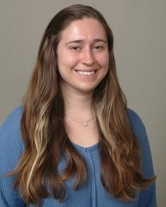

|

|
Emily Herbert
About Me:
First-year PhD student at the University of Massachusetts Amherst, College of Information and Computer Sciences.
More About Me:
CV
GitHub
Twitter
Teaching:
Spring 2019. COMPSCI 220: Programming Methodology, taught by Arjun Guha and Joe Chiu. Teaching assistant.
Fall 2018. INFO 150: A Mathematical Foundation for Informatics, taught by Peter Haas. Teaching assistant.
Contact:
emilyherbert (at) cs (dot) umass (dot) edu
Emily Herbert
College of Information and Computer Sciences
140 Governors Drive
Amherst, MA 01003
|